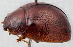
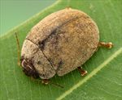
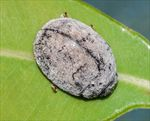
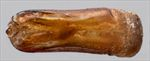
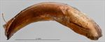
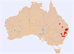

Click on images to enlarge

Male, Mt Moffat Section, Carnarvon NP, Qld

Male, Wallabadah, New South Wales

Female, Yarrowyck, N.E. New South Wales

Aedeagus, dorsal view (Mole River, N.E. New South Wales)

Aedeagus, lateral view (Mole River, N.E. New South Wales)

Distribution
Ta30
Name
Trachymela diffusa (Chapuis)
Reference specimen
1997-0120, Swan Creek, Yangan, SE Queensland.
Adult Description
Length: ♂ (4.9)5.3–6.4 mm (n=21), ♀ (5.1)5.5–6.5(6.8) mm (n=30).
Colouration:
Head: uniformly reddish-brown with black-tipped mandibles, labrum straw-brown; antennomeres 1–11 uniformly straw- to light-brown, distal ends of antennomeres 8–11 sometimes slightly darker, rarely much darker, brown.
Pronotum: brown, concolorous with head, sometimes with a small, dark-brown or black, round patch roughly in line with inner edge of eye, less often with foveal area black.
Scutellum: brown, concolorous with or somewhat darker than pronotum, if the former, usually broadly edged in a darker shade of brown.
Elytra: variable, brown, slightly darker shade than pronotum, frequently with some longitudinal interstices that are slightly lighter in colour, rarely the lighter interstices form a variegated pattern, less often whole elytra is concolorous with pronotum, humeral callus concolorous with surrounds.
Venter & Legs: light- to mid-brown, margins of thoracic ventrites often darker, legs always a slightly lighter shade, inside surface of elytral epipleura brown.
Cuticular Wax: a uniform layer, sometimes very thick, of grey, light-brown or greyish-brown, rarely two slightly different shades are present.
Morphology:
Head: punctures moderate in size (pd ≈ 1.5–2× ef) and evenly and densely distributed. Antennae short (AL: ♂ 39–44% BL, ♀ 35–38% BL), filiform.
Pronotum: almost evenly curved transversely, usually with a broad but very shallow depression situated behind the outside edge of each eye, puncturation clearly impressed, evenly distributed and moderately dense in discal area, becoming much coarser at lateral margins. A small round elevated area is often present in the centre of foveal region, with a similar small elevated area sometimes also at each end of disc, the density of punctures on these elevations lower than on surrounds. Front margins join lateral margins in a smoothly rounded right-angle, with lateral margin initially straight for a short length and then curving smoothly and gradually towards rear margin.
Scutellum: surface smooth or slightly rough, punctures, if present, usually few in number and smaller than on adjacent area on pronotum.
Elytra: surface evenly curved, punctures distinct and evenly distributed, with much smaller punctures scattered sparingly on the interstices, verrucae are absent though sometimes a few very slightly elevated discrete interstices may give the appearance of some, some longitudinal slightly raised interstices may be present, sometimes extending for the full length of elytron, surface continuous under humeral callus. Vertical extension of epipleura considerable (HCE/PW = 0.35–0.38).
Venter: prosternal process almost parallel-sided, open or lightly closed anteriorly, short setae present at rear of prosternal process, absent from mesoventrite, a single seta on anterior and median trochanter; front edge of metaventrite beveled, truncate; inner edge of epipleurae lacking setae.
Male Genitalia (Aedeagus):
Dimensions: moderate-sized (LPE = 35–41% BL).
Dorsal view: sides of shaft slightly sinuate, widest at base then narrowing towards apex before widening again to ostium, from there the sides converge towards apex in a smooth arc, dorsal surface smoothly curved with faint dorso-median channel usually present, dorso-lateral channels long, tip protruding slightly, ostium oval.
Lateral view: shaft almost evenly curved throughout central and apical regions, thinning towards apex over 15% of length, tip deflexed, flagellum thin and loosely curved.
Immature Stages
Unknown.
Similar species
Ta35: though very similar in general appearance, there is only a small overlap in sizes between Ta30 and the smaller Ta35. Ta30 is almost always lighter in colour (more reddish-brown) than the very dark-brown Ta35 and has proportionally longer antennae. The two species have different hosts, with Ta30 feeding on Angophora and Ta35 on Blakella tessellaris.
Ta36: this somewhat smaller species is almost identical in external appearance to Ta30, though the aedeagi are very different.
Ta59: specimens of this species are similar in size to those of Ta30 and also lack verrucae, but are readily distinguished by their possession of a black inner epipleural surface.
Notes
Taxonomy: The identification as Trachymela diffusa (Chapuis) is by comparison with the description, so is somewhat tentative.
Morphological Variation: Several specimens from Siding Springs, near Coonabarabran particularly the two females, are somewhat smaller than is typical for this species, though otherwise are well within the range of variation of the species.
Host Associations: The species seems to feed exclusively on Angophora sp.
Copyright © 2026. All rights reserved.
{kind=link}
{kind=link}
{kind=link}
{kind=link}
{kind=link}
{kind=link}